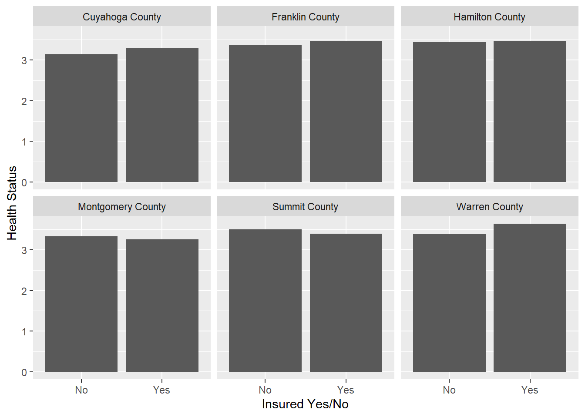
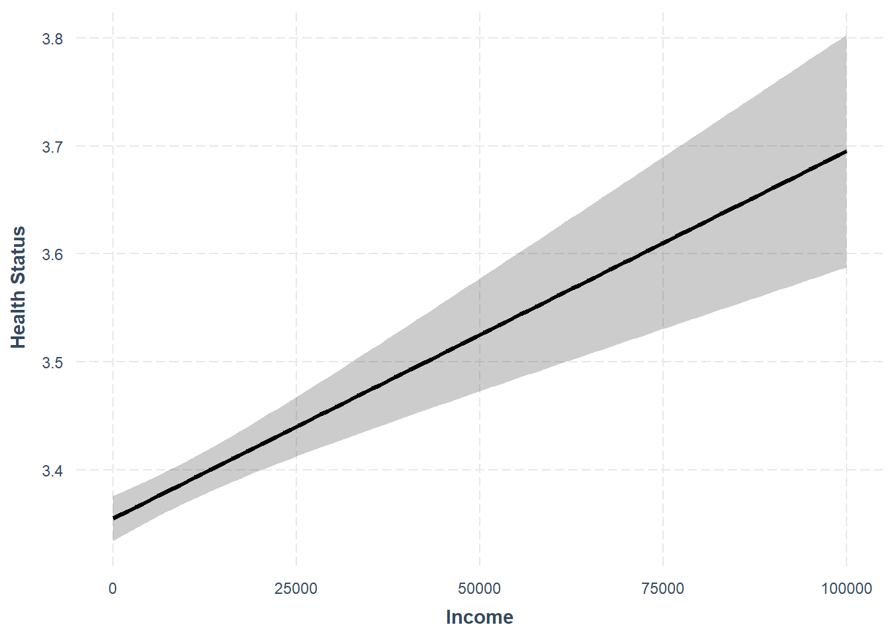

library(tidyverse)
library(knitr)
#data_url <- ("https://collinpaschall.github.io/omas2021_puf_10122022.rds")
#dat <- read_rds(data_url)
# Drop observations from survey where FIPS is missing or otherwise not good
# (assume county must be known for this demonstration)
dat <- read_rds("omas2021_puf_10122022.rds") %>% filter(S9<996)
# Inspect if you want
# glimpse(dat)OMAS Survey R Demo
This document includes some demonstration code for importing, wrangling, and summarizing data from the 2021 OMAS survey.
Load Data
# Merge in some county names corresponding with FIPS codes
# get FIPS from Kieran Healy's page
#fips <- read_csv("https://raw.githubusercontent.com/kjhealy/fips-codes/master/state_and_county_fips_master.csv")
#write_csv(fips,"fips.csv")
fips <- read_csv("fips.csv")
# data preparation
dat2 <- fips %>%
filter(state=="OH") %>%
mutate(fips=fips-39000) %>% # Substract 39000 from the FIPS values for Ohio
rename(`County Name` = name) %>% # rename fips$name to fips$county_name
select(c("fips",`County Name`)) %>% # drop "state"
left_join(dat,.,by=c("S9"="fips")) %>% # join to survey data
filter(`County Name` %in% c("Franklin County","Warren County","Cuyahoga County","Hamilton County","Montgomery County","Summit County")) %>% # select only large countries
select(c(`County Name`,"A1","S17_1","H84_A2","D30")) %>% # select a handful of variables of interest %>%
mutate(
insurance_01 = case_when(
A1==2 ~ 0,
A1==1 ~ 1),
`Insured Yes/No` = case_when(
A1==2 ~ "No",
A1==1 ~ "Yes"
),
health_status = case_when(
D30==5 ~ 1,
D30==4 ~ 2,
D30==3 ~ 3,
D30==2 ~ 4,
D30==1 ~ 5),
white_01 = case_when(
S17_1==2 ~ 0,
S17_1==1 ~ 1)) %>%
rename(income=H84_A2) %>%
drop_na() # drop NAsSummary Values for Select Variables
kable(dat2 %>%
group_by(`County Name`) %>%
summarise("Average Income"=round(mean(income),0),
"Health Status"=round(mean(health_status),2),
"% Insured"=round(sum(insurance_01)/n(),2),
"% White"=round(sum(white_01)/n(),2)))| County Name | Average Income | Health Status | % Insured | % White |
|---|---|---|---|---|
| Cuyahoga County | 6842 | 3.29 | 0.95 | 0.57 |
| Franklin County | 7995 | 3.46 | 0.93 | 0.67 |
| Hamilton County | 7767 | 3.45 | 0.94 | 0.64 |
| Montgomery County | 6422 | 3.26 | 0.94 | 0.66 |
| Summit County | 7363 | 3.39 | 0.95 | 0.81 |
| Warren County | 10459 | 3.64 | 0.98 | 0.87 |
A simple visualization of health status by insured status and county
summary_dat <- dat2 %>%
group_by(`County Name`,`Insured Yes/No`) %>%
summarise("Health Status"=round(mean(health_status),2))
summary_dat %>%
ggplot(aes(x=`Insured Yes/No`,y=`Health Status`))+
geom_bar(stat="identity")+
facet_wrap(vars(`County Name`))
A simple regression model for health status as function of other variables
library(stargazer)
mod <- lm(health_status~income+insurance_01+white_01,dat2)
stargazer(mod,type="html")| Dependent variable: | |
| health_status | |
| income | 0.00000*** |
| (0.00000) | |
| insurance_01 | 0.001 |
| (0.042) | |
| white_01 | 0.257*** |
| (0.020) | |
| Constant | 3.184*** |
| (0.042) | |
| Observations | 11,780 |
| R2 | 0.017 |
| Adjusted R2 | 0.017 |
| Residual Std. Error | 1.044 (df = 11776) |
| F Statistic | 67.288*** (df = 3; 11776) |
| Note: | p<0.1; p<0.05; p<0.01 |
Visualizing predicted values using regression model
This figure displays predicted values for health status as a function of income, holding other variables at their means (which is not necessarily meaningful for categorical independent variables, but this is only for technical demonstration purposes.)
library(jtools)
effect_plot(mod,pred=income,interval=T)